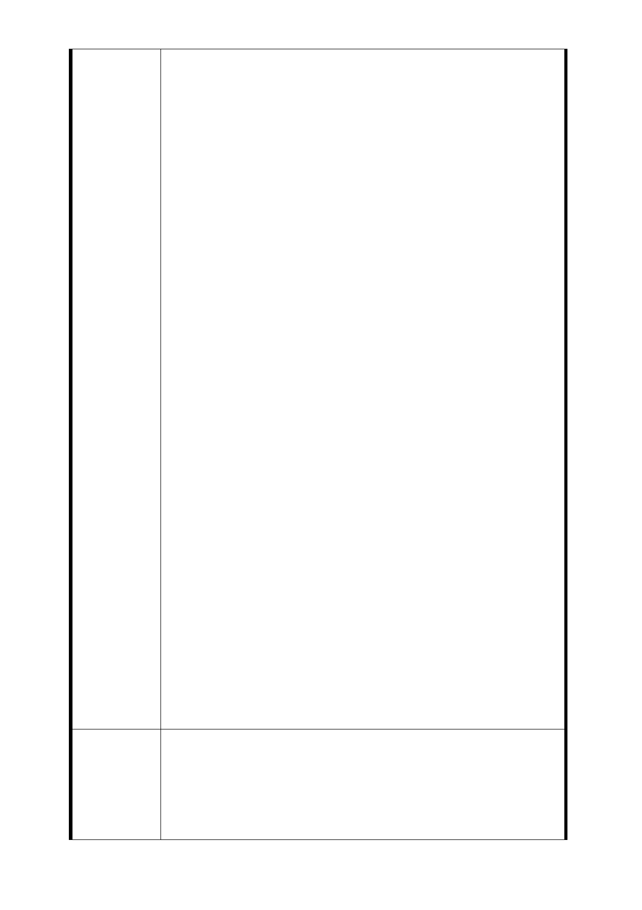

有關土地開發區（捷）四，吾人等對於後續捷運共構之開發
方式仍有諸多疑慮詳後說明：
1.依都市更新條例規定，都更案可以適用相關賦稅之減免，
例如：土地增值稅免稅等，惟依「土地協議價購優惠辦法」
第 5 條最後 1 項規定，相關稅賦尚需繳納。另建議第 6 條
部份是否可比照都更優惠，減免 40 % ?
若未比照都更相關之稅賦優惠條件，則計算參與聯合開發後
土地及地上物移轉時尚須繳納之各項稅費實際上未必比自行
辦理都更優惠。
2.一般都更案件為保障地主權益會將拆遷補償金、拆遷獎勵
金、人口搬遷補助費與拆遷安置費用等列入協議書內容，
為何土地協議價購辦法未列入上述費用？且採用與都更不
同標準並要求地主放棄「拆遷安置費」請求權利？
3.依據 100 年 5 月 28 日貴府列席本區住戶自行召開說明會當
天說明。以往地主與捷運局聯合開發案件，並非由台北市
政府先辦理徵收，變更土地所有權人後，再於興建完成，
移轉所有權歸還予原地主。惟此次係由台北市政府先行徵
收，並變更所有權人為台北市政府後再興建。
陳 情 理 由 就地主個人權益保障而言，此開發案件係屬長期性質，興建
期間可能在實務上發生許多人為無法控制之情事，或是建商
倒閉無法完成開發案件等等，不能因為以往實務沒有發生失
敗案例，即認為往後不會發生。請問移轉土地所有權後，如
何保障地主所有權不會因為開發案件不成功，而被台北市政
府無故無償徵收？這對地主戶而言，風險很大，也沒看到土
地價購協議書中有任何維護地主權益的條款，如何叫地主放
心？因此建議信託機制可否列入聯合開發計畫案之必要條
件，以確保興建資金專款專用及將來續建之機制（亦即建商
倒閉後，該興建案仍可持續進行）?
4. 在此開發案件中有三個參與角色：地主、台北市政府與投
資者（建商），惟因地主係將土地所有權移轉給台北市政
府？於此開發案件中與建商談判相關分配比例者並非地
主，而是台北市政府，地主顯然被排除於聯合開發案中，
試問地主戶的權益該如何保障？地主處於被動、被強制徵
收、無法反對台北市政府之泱定。一般都更採用信託方式
至少還有一定保障，但與捷運局聯合開發卻會讓地主有失
去土地所有權之風險。如此，何來教人覺得與捷運局聯合
開發為「－定比都更優惠」？
土地所有權人依「臺北市臺北都會區大眾捷運系統開發所需
土地協議價購優惠辦法」規定，得與主管機關簽訂協議價購
市 府 回 應 協議書並申請以該基地開發後之公有不動產抵付協議價購土
意 見 地款；或申請優先承購、承租該基地開發後之公有不動產，
先予敘明。私地主自願依市價讓售土地予需地機關，依法免
徵土地增值稅，至於日後原地主以優先承購方式購回時，因
- 32 -